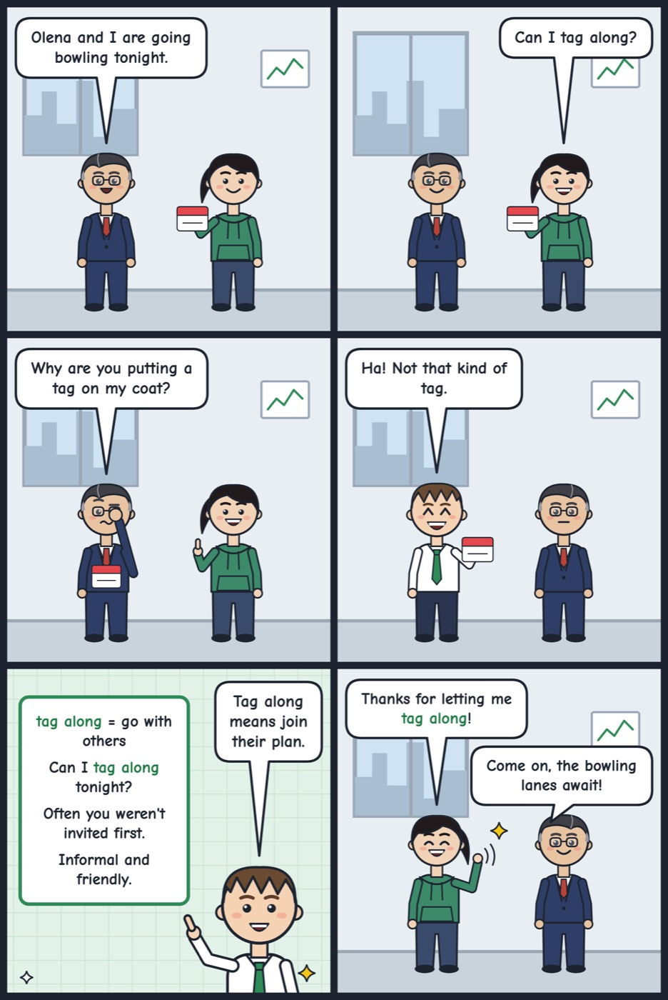

tag along
To go somewhere with other people who didn't ask you.
Do you mind if I tag along to the party?
Tip: Use 'tag along' (often with 'with' someone) when you join a plan uninvited or when you're happy for someone to join yours; it sounds friendly, but don't use it for formal invitations.
Hear it in conversation
Workbook
1. What does it mean?
In this conversation, what does 'tag along' mean?
2. Fill the gap
My little sister always wants to whenever I go out with my friends.
3. Choose the best reply
Mei: We're all going to the new market after work. Want to come?
4. Your turn: speak
Tell me about a time you joined other people's plans, even though you weren't originally invited.
Show an example answer
Last summer, my coworkers were going hiking, and I asked if I could tag along. I didn't know the trail, but they were really welcoming. It ended up being a great day, and I got to know them much better.
Answer key: tag along
- 1. A. To join a group's plans, even though you weren't part of them
- 2. tag along
- 3. A. Sure, if you don't mind me tagging along!
- 4. Example: Last summer, my coworkers were going hiking, and I asked if I could tag along. I didn't know the trail, but they were really welcoming. It ended up being a great day, and I got to know them much better.
See it in a comic
